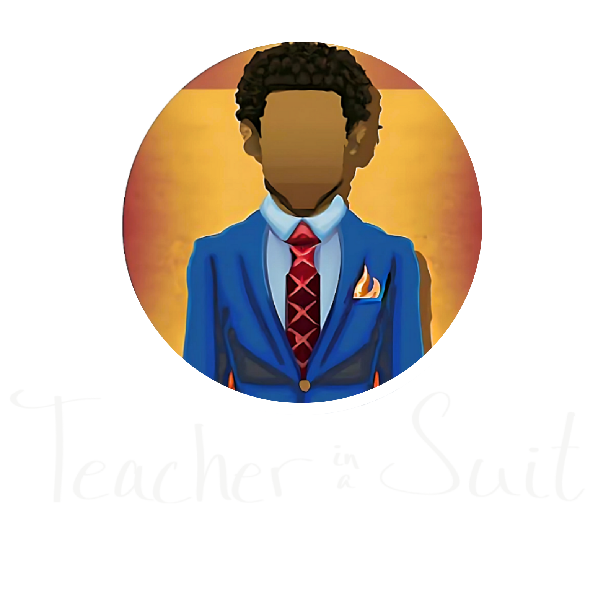

Teacher in a Suit
AI Literacy in 15 Minutes
Episode 1: "Think Bigger"
Teacher Guide
Created for


Teacher Guide
Students watch Winston demonstrate what AI actually is, see a hands-on activity that shows how input quality drives output quality, and learn about a free tool they can use to learn anything.
Play the first two segments, then run the logo activity live. Total time: 10-15 minutes.
The hook (Davon's "take over the world" story) and the NotebookLM/Marvinville story. Pause after the Marvinville section.
"Ask a parent or guardian to help you try NotebookLM. Pick something you're curious about -- dinosaurs, space, how cars work -- and see what it teaches you."
Play the full video. Then run a 5-10 minute discussion and activity.
No pauses needed -- the pacing works for this age group.
"Go to notebooklm.google.com tonight. Upload one thing -- a YouTube video about a topic you're studying, a chapter from your textbook, your class notes. Generate an audio overview. Listen to it. Come back tomorrow and tell me what it taught you."
Play the full video. Let it land. Then extend the conversation for 10-15 minutes.
Don't pre-explain or post-summarize -- the video does the work.
"Upload your most confusing class material into NotebookLM. Tell it to explain it using something you actually care about. See if it changes how you understand it. If it does -- why aren't you doing this every day?"
This video is for students. But if you're watching it too, here's what to take away.
Students are practicing descriptive writing, revision, and precision -- and they don't even realize it. You can run this activity in any subject, any grade.
Upload your curriculum documents, rubrics, or textbook chapters. Generate study guides, audio overviews, or mind maps for your classes in minutes. It's a planning tool, a differentiation tool, and a student support tool.
Paste any assignment into ChatGPT. If it completes it in under 2 minutes, that assignment is measuring compliance, not thinking. That's not a criticism -- it's information. Use it to redesign.
Everything you need, in one place.
Teacher in a Suit — AI Literacy Teacher Guide
Created for Foundation Academies · National AI Literacy Day 2026
Questions? Reach out to Winston Roberts — AI Office Hours, Wednesdays 3:30-4:15